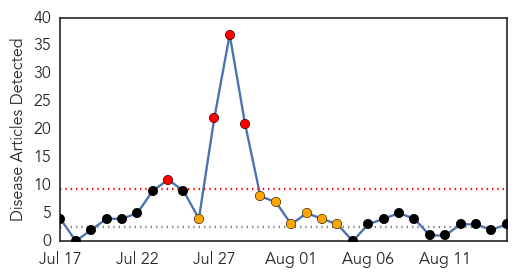
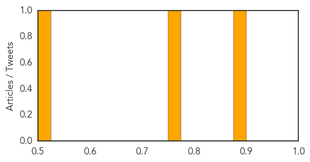

Mold/Fungal
30-Day Web Trend
0 alerts, 1 warnings

30-Day Twitter Trend
0 alerts, 0 warnings

Article Locations

Article Confidences

Top Articles:
Top Tweets:
-
No tweets found for Aug 15, 2015
Hepatitis
30-Day Web Trend
4 alerts, 7 warnings

30-Day Twitter Trend
1 alerts, 0 warnings
Article Locations
Article Confidences
Top Articles:
Top Tweets:
-
No tweets found for Aug 15, 2015